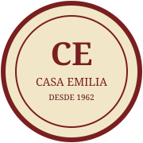
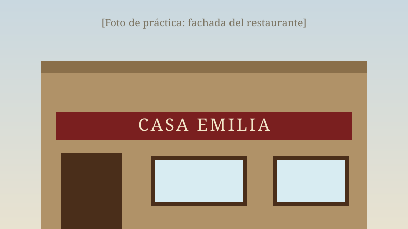
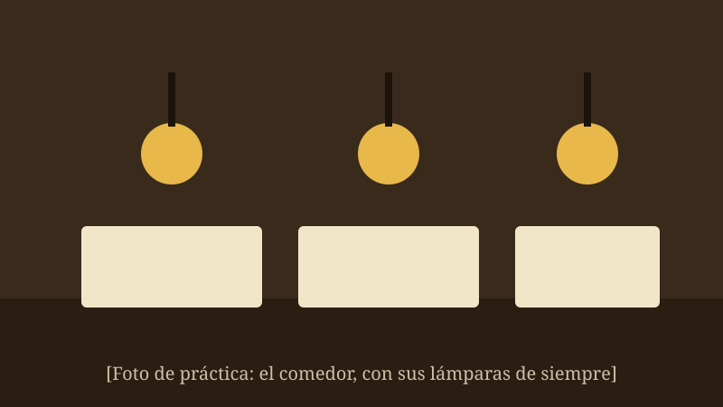
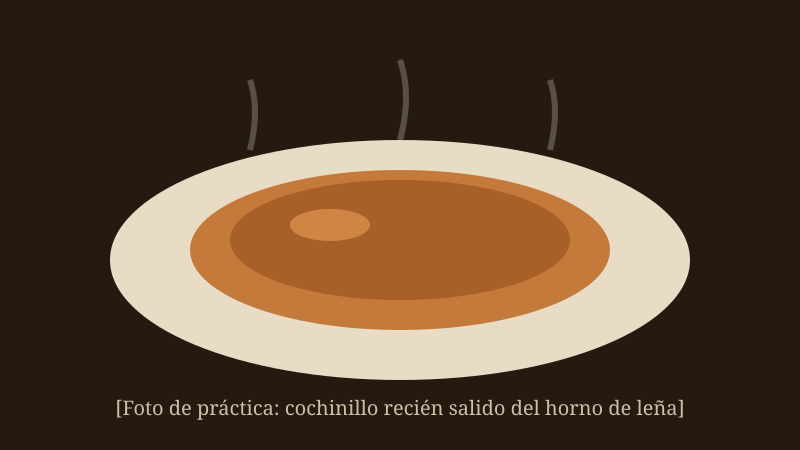

En Casa Emilia nos complace darle la bienvenida a nuestro sitio web. Somos un restaurante de cocina tradicional situado en Torrelunar. Esperamos que disfrute de su visita a esta página y que pronto podamos atenderle en nuestro establecimiento.

Casa Emilia abrió sus puertas en 1962, cuando Emilio Herranz y su mujer, Carmen, convirtieron la antigua taberna familiar de la Calle de la Fuente en un asador de barrio. Su hijo Andrés tomó los fogones en 1989 sin cambiar ni el horno de leña ni la receta del cochinillo, y hoy es la tercera generación, su nieta Marta, quien dirige la casa con el mismo cariño de siempre.
Más de 60 años después seguimos asando en el mismo horno de leña con el que empezó todo, y la ensaladilla se sigue haciendo cada mañana con la receta de Carmen.

Para empezar
| Croquetas caseras de jamón (8 uds.) | 7,50 € |
| Ensaladilla de Carmen | 6,00 € |
| Torreznos de Soria | 5,50 € |
| Sopa castellana | 6,50 € |
Nuestros asados y platos principales
| Cochinillo asado en horno de leña (ración) | 21,00 € |
| Paletilla de lechazo (por encargo) | 24,00 € |
| Merluza a la romana | 16,50 € |
| Paella de encargo (mín. 2 pers., precio por persona) | 18,00 € |
Postres caseros
| Flan de la abuela | 4,50 € |
| Tarta de queso al horno | 5,00 € |
| Torrijas (temporada) | 4,50 € |
De lunes a viernes al mediodía ofrecemos nuestro menú del día por 14,50 €: primero, segundo, pan, bebida y postre o café.

Disponemos de un salón privado para comuniones, bautizos, comidas de empresa y celebraciones familiares de hasta 60 comensales, con menús cerrados a medida. Consúltenos sin compromiso por teléfono.
"El mejor cochinillo que he probado fuera de Segovia. El trato de Marta, de diez." — Rosa M.
"Llevo comiendo aquí desde los años 80 y sigue igual de bueno. Las croquetas son obligatorias." — Paco G.
"Sitio de toda la vida, comida honesta y abundante. Se llena, id pronto." — Lucía T.
Calle de la Fuente, 12 — 28590 Torrelunar (Madrid)
Teléfono: 912 000 111
Horario: martes a domingo de 13:00 a 16:30. Viernes y sábados también noches, de 20:30 a 23:30. Lunes cerrado por descanso.
También puede escribirnos a casaemilia@ejemplo.es
Síganos en Facebook: Restaurante Casa Emilia Torrelunar